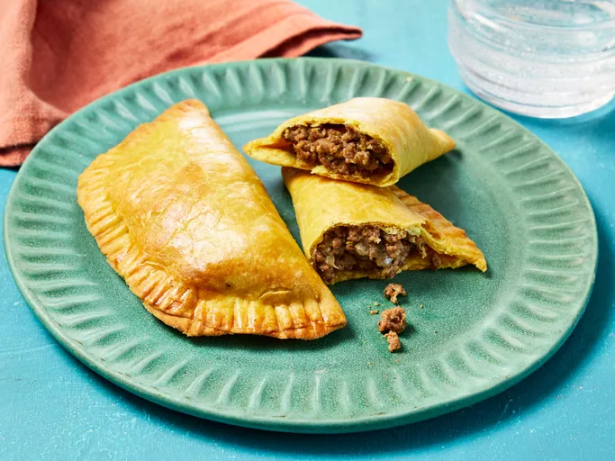

Jamaican Beef Patties

Make Your Own Jamaican Beef Patties At Home
This Jamaican beef patty recipe makes delicious curry-flavored beef pastries popular in Jamaica and other Caribbean islands. Try serving them with peas and rice, or have them as a snack.
With a few ingredients and 8 Easy Steps, make 10 servings of Jamaican Beef Patties in about 1 hour.
Ingredients
Pastry:
- 2 cups all-purpose flour
- 1 1/2 teaspoons curry powder
- 1 pinch salt
- 1/4 cup butter or margarine
- 1/4 cup shortening
- 1/3 cup water
Filling:
- 2 tablespoons butter
- 1 pound ground beef
- 1 small onion, finely diced
- 1 Scotch bonnet pepper - stemmed, seeded, and minced
- 1 teaspoon curry powder
- 1 teaspoon allspice
- 1 teaspoon ground cloves
- 1 teaspoon dried thyme
- 1 teaspoon freshly ground back pepper
- pinch of salt
- 1 beef bouillon cube
- 1/2 cup water
- 2 tablespoons browning seasoning sauce
- 1 bay leaf
- 1/2 cup dry bread crumbs
- 1 egg, beaten